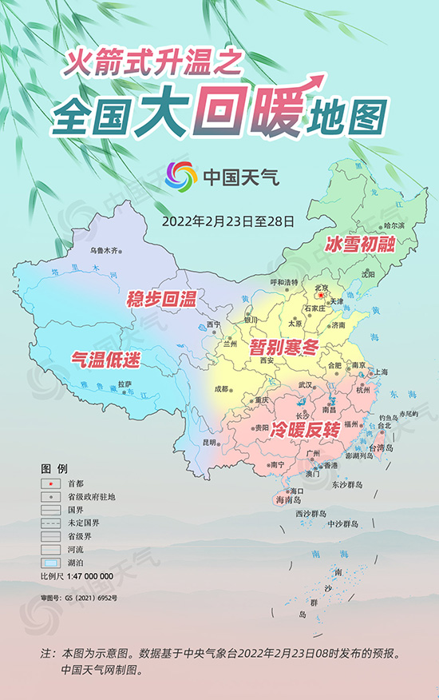

中国天气网首席气象分析师胡啸介绍，本次全国大回暖过程涉及范围广，升温幅度大。2月23日至25日，北方将掀起一股气温创新高的浪潮；24日以后，南方地区进入气温普遍上涨阶段，大部地区累计升温幅度都在10℃以上，江南、西南地区的气温更是上涨15℃及以上。 中国天气网推出的“全国大回暖地图”显示，24日至28日，东北地区的气温将稳步回升，三个省会城市的最高气温将回到冰点以上，大地回暖、冰雪初融；北京、天津、河北、陕西、山西、山东、河南一带也将大踏步升温，最高气温将突破10℃，暂别寒冬；江南、华南将经历冷暖反转，多地气温大跃进至20℃以上，江南一带甚至可能就此开启入春进程
胡啸介绍，这轮回暖大潮中，2月23日，北方组率先开始回暖，24日至25日，华北、东北、黄淮等地气温陆续创新高，25日几乎所有北方的省会级大城市都会迎来2022年以来最暖的白天。 届时，在冬日暖阳的照耀下，郑州最高气温将达到16℃，西安、石家庄14℃，北京、天津也有望冲击11℃，与上周0℃上下的最高气温相比，体感会舒适不少。
2月24日起，随着阳光回归，南方地区气温开始显著回升，逐步开启“补偿式”升温，将实现冷暖大逆转，多地累计升温幅度都将超过10℃，南方大部可能就此迎来春暖花开。 26日之后，南方多地气温将陆续创今年以来的新高，南昌、杭州、贵阳、昆明、福州、广州的最高气温都将达到20℃以上。本周末到下周初，南方大部将呈现出一幅春意盎然的景象，比起前几天的湿冷雨雪天气，可能有“一夜跨季”的穿越感。
编辑
？